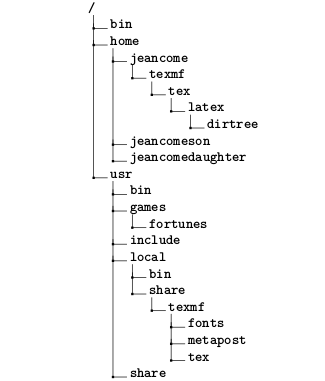

Esses dias precisei criar uma árvore de diretórios em LaTeX. Se você não sabe, uma árvore de diretórios é um diagrama para representar uma estrutura de arquivos qualquer.
Inicialmente tentei fazer à maneira DIY. Mas tenho de admitir que o resultado ficou meio “caído”.
Como queria algo mais apresentável, procurei alguma ferramenta mais apropriada. Encontrei o pacote dirtree. Nesse post mostrarei como instalar e utilizar esse pacote, e algumas de suas opções. Estou utilizando Linux Mint 17.
Instalação
Baixe o pacote dirtree aqui. Nesse link você também encontrará a documentação para o pacote.
Há várias maneiras de instalar um pacote, escolhi a que me pareceu mais fácil. Após baixar o arquivo dirtree.zip, extraí os arquivos para a minha pasta de trabalho. Executando o terminal na pasta:
pdflatex dirtree.ins
ctanify dirtree.ins
Pronto, o pacote está instalado!
Utilização
Para criar a sua árvore de arquivos, adicione \usepackage{dirtree} ao cabeçalho do seu arquivo .tex.
A partir daí, basta criar a sua árvore utilizando o \dirtree{}:
\dirtree{%
.1 /.
.2 bin.
.2 home.
.3 jeancome.
.4 texmf.
.5 tex.
.6 latex.
.7 dirtree.
.3 jeancomeson.
.3 jeancomedaughter.
.2 usr.
.3 bin.
.3 games.
.4 fortunes.
.3 include.
.3 local.
.4 bin.
.4 share.
.5 texmf.
.6 fonts.
.6 metapost.
.6 tex.
.3 share.
}
E assim se chega ao resultado:

Cada número representa o nível da pasta ou arquivo.
O meu arquivo final ficou assim:
\documentclass[a4paper,11pt]{article}
\usepackage[brazilian]{babel}
\usepackage[utf8]{inputenc}
\usepackage{dirtree}
\title{Exemplo de utilização do pacote \emph{dirtree} para \LaTeX}
\author{Paulo Miranda Moreira - eupaulo.com}
\date{\today}
\begin{document}
\maketitle
Exemplo de criação de árvores de diretórios em \LaTeX utilizando
o pacote \emph{dirtree}.
Acesse eupaulo.com para saber mais.
\section{Árvore de diretórios}
\dirtree{%
.1 home/.
.2 documentos/.
.3 trabalho/.
.3 faculdade/.
.2 vídeos/.
.2 fotos/.
.3 férias/.
.3 pastas mil/.
.2 downloads/.
}
\end{document}
Você pode baixar o pdf desse documento aqui.
Fica bonito, não?
O pacote permite ainda que você mude a cor dos textos, espaçamente e o tamanho dos quadradinhos dos nós. Para isso, vale a pena checar a documentação.